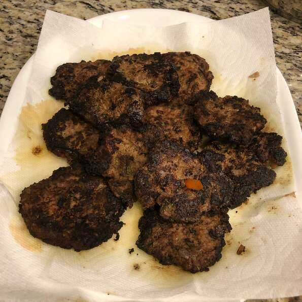

Chapli kebab is a form of kebabs widely popular in Pakistan. Mixed together with a South Asian blend of spices, the beef is flattened into circles and shallow-fried. The patty must have a charred exterior for an authentic look and flavor! Serve in a bun with pickled red onions or with a side of pita bread. Add my traditional raita (yogurt dip) to your beautiful platter!
Spray a small skillet with cooking spray; warm over medium-high heat. Pour egg into the skillet; cook and stir until scrambled and set, 3 to 5 minutes.
Combine scrambled egg, beef, chopped tomato, onion, cilantro, mint, ginger-garlic paste, coriander seeds, salt, cumin, and cayenne pepper in a bowl. Mix by hand until well combined. Shape mixture into patties. Press a tomato slice into the center of each patty.
Heat oil in a deep skillet to 375 degrees F (190 degrees C). Cook patties in the hot oil in batches until charred, 4 to 6 minutes per side.